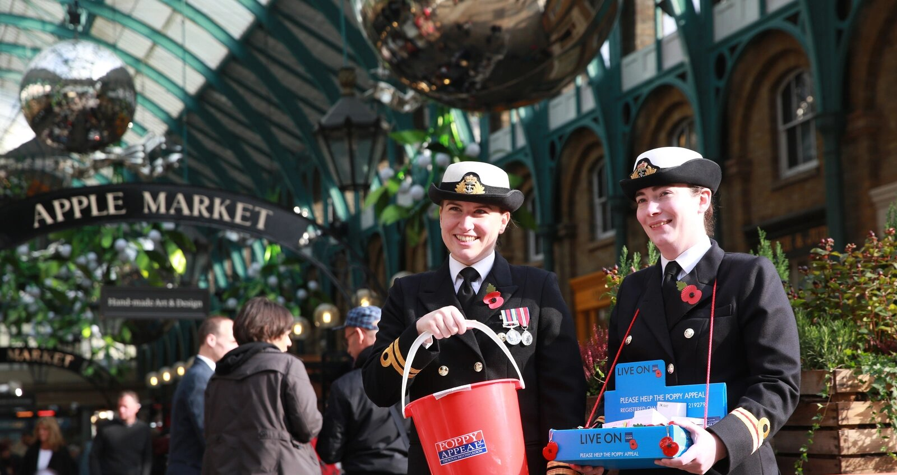
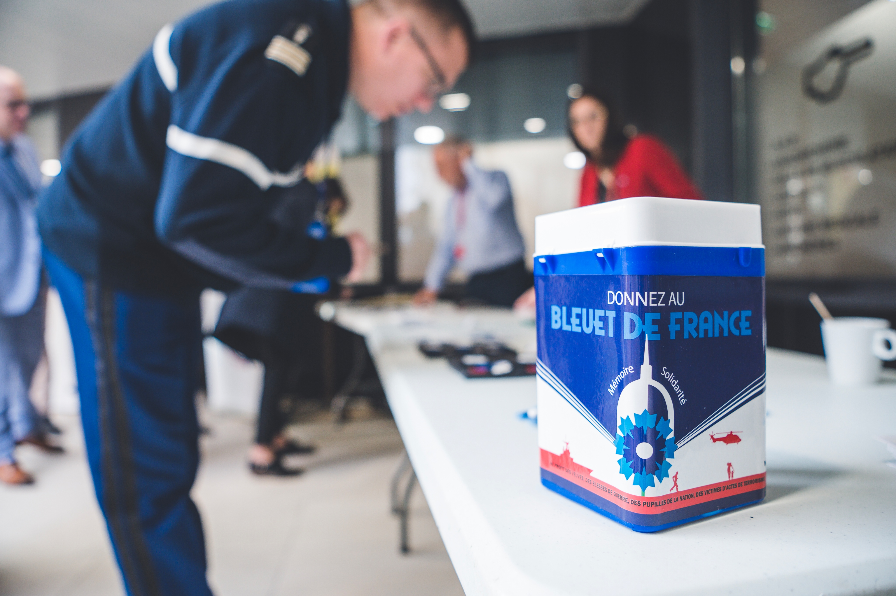

Get Involved
As important as remembering history is we should also view supporting our veterans as our duty. Many veterans and families still struggle today with ongoing wars and the cost of living crisis make situations for vulnerable people more precarious. Donate and show your support!

Donate to the Royal British Legion
"We're here through thick and thin – ensuring their unique contribution is never forgotten. We've been here since 1921 and we'll be here as long as they need us." - The Royal British Legion

Help the Bleuet de France with ONACVG
Bluet the France is an originally women founded french organization created to help wounded soldiers and others that suffered due to the war. Today ONACVG is the leading organization in France on remembering, supporting veterans and donating.